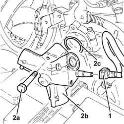
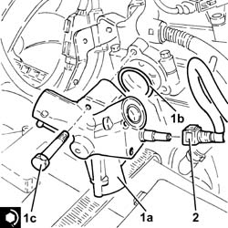

1056F72 PRESSURE PUMP - R.R.
- Path
- Procedures > 10 ENGINE > 1056 PETROL INJECTION SYSTEM > 1056F DIRECT PETROL INJECTION SYSTEM > 1056F72 PRESSURE PUMP - R.R.
- Kind
- repair procedure (removal / refitting; the operation number is the code)
- Applies to
- engines: 2.0 JTS, 2.0 JTS; all production periods
- Interactive page
- https://sloeber94.github.io/elrnDB-a156/en/#/3237740
Applies to: engines: 2.0 JTS, 2.0 JTS; all production periods
 Removing
Removing
 Refitting
RefittingPosition the vehicle on the ramp.
Ensure that the ignition key is in the OFF position, then disconnect the negative battery terminal.
 | Name | Connector |
|---|---|---|
- | Battery |
Proceed with removal 1016A40 ignition coil cover on cylinder head- r+r .
Proceed with removal 7055B54 under-engine guard - r r .
Proceed with removal 1056F76 High pressure PIPE from PRESSURE PUMP TO single FUEL MANIFOLD PIPE - R.R.A .
1. Disconnect the rapid connector on the fuel supply pipe from the pressure pump.
2. Undo the bolts (2a) and remove the pressure pump (2b) complete with O-ring (2c).

Applies to: engines: 2.0 JTS, 2.0 JTS; all production periods
Refitting
Removing1. Place the pressure pump (1a), complete with O-ring (1b), back in its housing and fix it tightening the bolts (1c) to the recommended torque.
 | Fastening | Component | Ø | Value (daNm) |
|---|---|---|---|---|
1c | Bolt | PRESSURE PUMP | M6 | (Cylinder head side) 0.8 ÷ 1.0 |
2. Connect the rapid connector on the fuel supply pipe to the pressure pump.

Applies to: engines: 2.0 JTS, 2.0 JTS; all production periods
Proceed with refitting 1056F76 High pressure PIPE from PRESSURE PUMP TO single FUEL MANIFOLD PIPE - R.R.A .
Proceed with refitting 7055B54 under-engine guard - r r .
Proceed with refitting 1016A40 ignition coil cover on cylinder head- r+r .
Connect the negative (-) battery terminal.
Remove the car from the ramps.